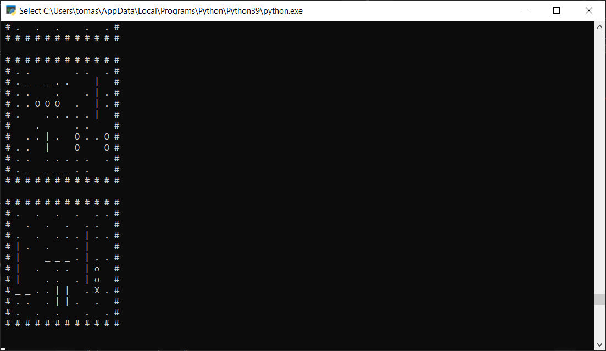

Portfolio
Tomás Carreras' projects cronologically
go back
School projects
Frog Against Gravity
Degree's Final Poject
Developed a complete video game independently using Unity, taking the project through all stages of production — from concept and preproduction to development and release. Gained hands-on experience across multiple areas of game development and learned to manage the full production pipeline. This project strengthened my adaptability and reinforced the importance of solid preproduction, providing a strong foundation for future software projects.
Click here to go to the game's itch.io page.
Key Words: Unity · C# · Game Design · Full Production Pipeline · Adaptability · Preproduction

Kill Bill: House of Blue Leaves
Developed a playable prototype in Unreal Engine 5 as part of the Level Design course, recreating the “House of the Blue Leaves” fight scene from Kill Bill. Focused on translating cinematic references into interactive gameplay spaces, balancing visual fidelity with player experience.
Click here to go to the projects's repository.
Key Words: Unreal Engine 5 · Level Design · Prototyping · Gameplay Experience · Environment Design

Dune: Special Spice OPS
Worked as a Gameplay Programmer in a large-scale class project designed to simulate a professional studio environment. The team was divided into art, design, and development departments, each with leads and a producer to coordinate workflows.
Implemented the Lua scripting system into the custom engine, integrating it with engine components and ensuring it was accessible for the rest of the development team.
Developed gameplay features, including player character mechanics, enemy interactions, and AI behaviors.
Contributed to shaders and helped manage scene transitions.
Supported teammates in adopting the Lua system, facilitating smoother collaboration across the team.
This project provided invaluable experience in cross-department collaboration, large-team communication, and delivering gameplay features within a custom engine pipeline.
Click here to go to the game's website and here to see what I took part in.
Key Words: C++ · Lua · Custom Engine · Gameplay Programming · Team Collaboration · Agile · Shaders

Advanced Graphics Programming Engine
Developed a 3D model viewer featuring a deferred renderer and advanced graphics techniques, including normal mapping. Gained hands-on experience with shader programming and modern rendering pipelines, strengthening my understanding of computer graphics at a low level.
Click here to go to the projects's repository.
Key Words: C++ · OpenGL · Deferred Rendering · Shaders · Normal Mapping · Computer Graphics
Beat Hero
Developed a VR game demo inspired by Beat Saber as part of the Virtual Reality course. Built in Unity for the Oculus Quest, the prototype focused on delivering engaging rhythm-based gameplay mechanics and showcased interactive features optimized for VR. The project provided hands-on experience with VR development, input systems, and performance considerations for standalone headsets.
Click here to go to the projects's repository.
Key Words: Unity · C# · Oculus Quest · Virtual Reality · Gameplay Programming · Prototyping

The Mandalorian: Sands of Arvala
Contributed to a collaborative development project focused on building new features into an existing codebase. Implemented rendering functionality in OpenGL to handle both 2D and 3D elements simultaneously. This was my first experience working with a team of more than three programmers, which strengthened my skills in communication, coordination, and collaborative problem-solving.
Click here to go to the game's website and here to see what I took part in.
Key Words: OpenGL · C++ · Rendering · 2D/3D Graphics · Teamwork · Communication

Strawberry Engine
Independently developed a custom 3D model viewer called Strawberry Engine created as part of the Videogame Engines course. Built a rendering system capable of handling custom format files for imported .fbx models, and integrated Dear ImGui to provide a functional interface for user interaction. This project deepened my understanding of engine architecture and rendering pipelines while showcasing my ability to manage all aspects of development.
Click here to go to the Engine's website.
Key Words: C++ · Custom Engine · Rendering System · Dear ImGui · FBX Importing · Engine Architecture

Flutter Projects
Since my third year at university, I have been developing mobile applications with Flutter, starting with simple widget use cases and gradually progressing to more complex projects. Along the way, I have explored advanced features such as animations, which remain a current focus of my learning. My latest project is a custom version of the game 2048, which allowed me to apply my skills in app structure, state management, and UI design.
Click here to go to the Github repository where I share most of my Flutter projects.
Key Words: Flutter · Dart · Mobile Development · UI/UX · Animations · State Management
{kind=link}
Paint Wars
Developed a real-time strategy (RTS) game inspired by Age of Empires using C++ and SDL. Implemented core gameplay mechanics and systems while gaining hands-on experience with game loops, input handling, and 2D graphics programming.
Click here to go to the projects's repository.
Key Words: C++ · SDL · Real-Time Strategy · Game Loops · Input Handling · 2D Graphics

Fatal Fury II
Developed a remake of Fatal Fury II using C++ and SDL as part of the first-year game development projects. Implemented core gameplay mechanics, character controls, and collision systems. This project provided an accelerated learning experience in game programming, helping me build foundational skills that carried through all subsequent projects.
Click here to go to the projects's repository.
Key Words: C++ · SDL · Fighting Game · Gameplay Mechanics · Collision Systems · Game Programming

Other projects
The Force Knights
Participated in CITM’s 6th Game Jam, developing a 2D platformer in Unity within a five-day timeframe. Collaborated closely with a designer, two artists, and another programmer to focus on a single core gameplay mechanic, rapidly producing a playable demo. Gained experience in fast-paced prototyping, idea iteration, and collaborative problem-solving in a small development team.
Click here to go to the game's itch.io page.
Key Words: Unity · C# · 2D Platformer · Rapid Prototyping · Team Collaboration · Gameplay Mechanics

Console Battleship
Developed a console-based Battleship game in Python to expand my programming language skills. Implemented gameplay mechanics, player input handling, and a simple AI opponent in a single ~500-line script. This project provided hands-on experience with Python syntax, logic structuring, and rapid prototyping.
Click here to go to the projects's repository.
Key Words: Python · Console Programming · Game Logic · AI · Rapid Prototyping · Problem Solving

Get in touch
© Tomás Carreras. All rights reserved. Design: HTML5
UP & @needlesslord.